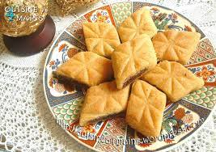

Makroudh
Makroudh is a traditional pastry that hails from Algeria, specifically from the city of Constantine. It is a popular and cherished treat in these regions. Makroudh is made by enclosing date paste in a dough, which is then cooked until golden brown. It is often drizzled with honey and garnished with sesame seeds. This sweet and delectable pastry represents the rich culinary heritage of Constantine.

Ingedients:
- 2 cups semolina (fine)
- 1/2 cup vegetable oil
- 1/2 cup clarified butter (melted)
- 1/4 cup orange blossom water
- 1/4 cup rose water
- 1/4 teaspoon salt
- 1 cup pitted dates
- oil (for frying)
Steps:
- In a mixing bowl, combine the semolina, vegetable oil, clarified butter, orange blossom water, rose water, and salt. Mix well until the dough is formed.
- Knead the dough for about 5-10 minutes until it becomes smooth and pliable.
- Divide the dough into smaller portions and shape each portion into a small rectangle.
- Take a portion of the dough and press it down to flatten it slightly. Place a strip of pitted dates in the center.
- Fold the dough over the dates to encase them completely and shape it into a cylinder. Seal the edges well.
- Repeat the process with the remaining dough and dates.
- Preheat your oven to 350°F (175°C).
- In a deep frying pan, heat vegetable oil over medium heat. Fry the makroudh in batches until they turn golden brown.
- Remove the fried makroudh from the oil and let them cool on a paper towel to absorb any excess oil.
- Once the makroudh have cooled, transfer them to a baking sheet and bake them in the preheated oven for about 10-15 minutes until they are crispy and lightly browned.
- Remove the makroudh from the oven and let them cool completely before serving.